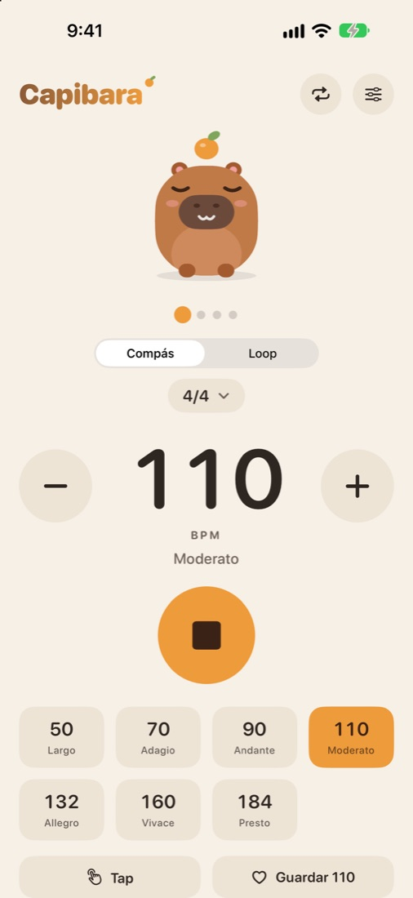
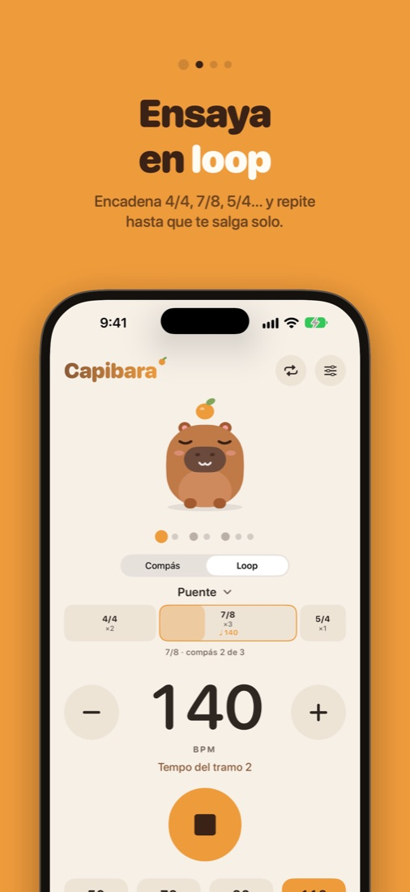
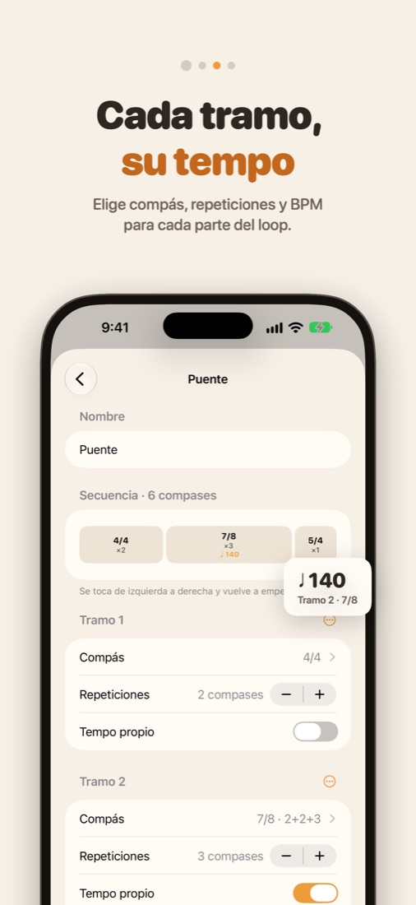
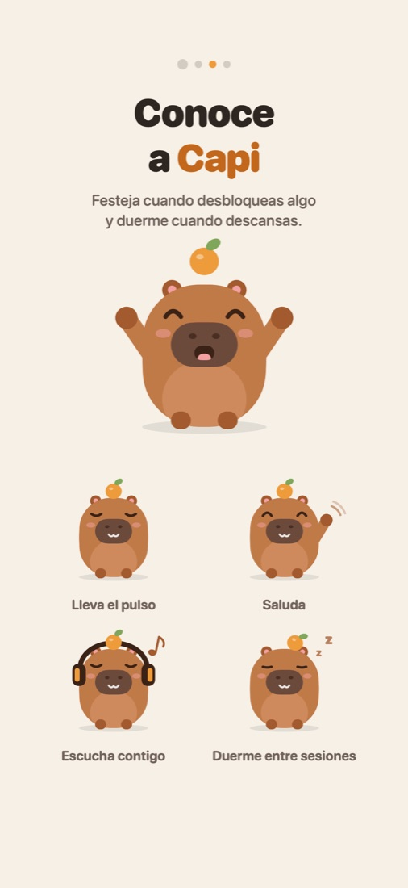

Lleva el pulso
con Capi
Un metrónomo tranquilo y preciso para los pasajes donde el compás no deja de cambiar. Arma una vez el 4/4, el 7/8 y el 5/4, dale a cada tramo su tempo y repítelo hasta que te salga solo.

Loops de ensayo
Encadena compases distintos, como 2×4/4 → 3×7/8 → 1×5/4, y se repiten hasta que los detengas.
Compases irregulares, bien hechos
Agrupa el 7/8 como 2+2+3 o 3+4, cuenta por grupos y escucha los acentos donde van en la música.
Tempo por tramo
El puente puede ir a 140 mientras la estrofa sigue a 110. El número grande siempre muestra lo que oyes.
Subdivisión
Clics suaves entre pulsos, en 2, 3 o 4, para sentir las corcheas, los tresillos o las semicorcheas.
Fuera de la app
Controles en la pantalla de bloqueo, widgets, un metrónomo en la barra de menús de la Mac y toques en la muñeca con el Apple Watch.
Un solo pago
El metrónomo es gratis. Capibara Pro es un pago único, sin suscripción, con 7 días de prueba gratis.


